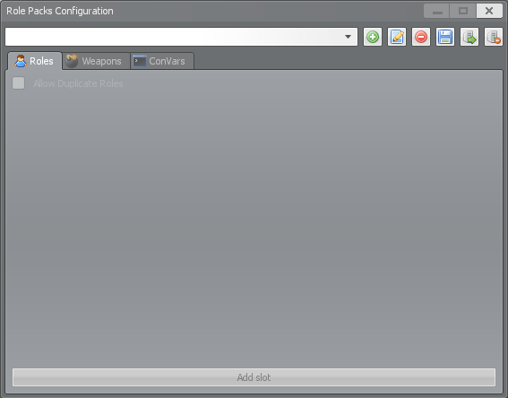
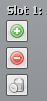
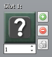
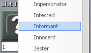
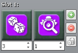
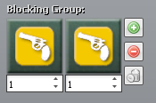
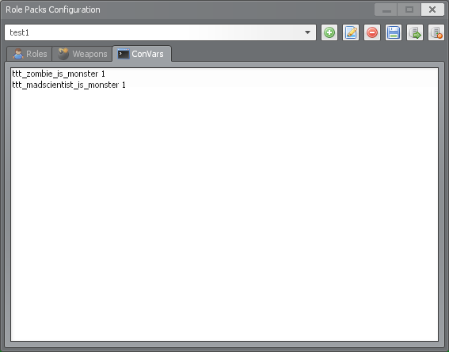

Role packs are a way of configuring roles, weapons, and additional ConVars all in one place. First and foremost, role packs give you much more control over how you want specific roles to spawn that our current system just can't handle. Want to always have a certain role spawn each round? Want multiple copies of some roles? Want to enable two different roles but never have them spawn together? Role packs will let you do all of this and way more!
On top of all this, role packs allow you to configure which weapons are available to specific roles in the shop, and any additional ConVars you might only want enabled in certain situations. These roles, weapons, and ConVars are bundled up into a role pack that you can enable or disable at any time, however only one role pack can be enabled at a time. Role packs are entirely optional, so if you don't enable any role packs you can still continue to play as you always have.
Role packs are created using the UI, accessible by admins using the ttt_rolepacks command. Once a role pack has been created in the UI, it is saved as a folder of .json files in the data/rolepacks folder. Role packs can then be backed up or copied from server-to-server just by transferring those folders.

To enable a role pack, set the ttt_role_pack ConVar to the name of the role pack you want to use.
NOTE: If you do this in either 'server.cfg' or 'listenserver.cfg' as detailed on the Configuring ConVars tutorial page, make sure to put the ttt_role_pack ConVar at the bottom of the file. ConVars are read from top to bottom and so any ConVars placed under ttt_role_pack will override ConVars configured through role packs.
At the top of the role packs window are the overall controls that are available regardless of the selected tab. The components of this section of the window are:
The roles tab is where most configuration of the role pack will occur. On this tab, you can create role "slots" which represent a single player in the round. Within each slot you can configure a pool of 0 or more roles for that player to be randomly assigned from. If a slot has 0 roles assigned to it, the normal (e.g. non-role pack) random role selection logic will be used for that slot instead. Each role within a slot can also have a weight assigned to it, making that role more likely than the others to be selected.
To add a new role slot, click the "Add Slot" button on the bottom of the tab. Once a slot has been added, you will be presented with three buttons:

When a new role entry has been added to a slot it defaults to the Innocent role. When this placeholder role is alone in a slot, it behaves the same as if the slot was empty: The player in this slot will have their role randomly assigned by the normal role selection logic.
Two other things to note about the role slot usage:

To change the role that the slot belongs to, click the role icon and select the new role from the dropdown.

To change the weight of a role (how often this role should be selected relative to the other roles in this slot), change the number in the box below the role icon by typing or using the adjustment arrows.

This tab is nearly identical to the Role Blocks UI described in the Configuring Role Blocks tutorial. The only differences are the "Use Default Role Blocks" checkbox and the ability for a role to block itself.
Checking the "Use Default Role Blocks" box will cause role blocks configured through the Role Blocks UI described in the Configuring Role Blocks tutorial to also take effect on top of any that are added to this role pack. Leaving this box unchecked means only role blocks configured for this role pack will work.
When configuring role blocks for a role pack, it is also possible for a role to be able to block itself. This can be useful if you would like the same role to have the possibility to spawn in multiple slots without the possibility of having duplicates of that specific role. To do this, create a blocking group with only two copies of the same role. Having any other roles in the same blocking group will not work. In the example below it would not be possible for more than one Mercenary to spawn, even if there were multiple slots in which the Mercenary could spawn and "Allow Duplicate Roles" was enabled on the "Roles" tab.

This tab is nearly identical to the Role Weapons UI described in the Configuring Role Weapons tutorial. The only differences are the removal of the "Update" and "Close" buttons (which are not needed in this UI), and the rename of the "None" checkbox to "Use Default". All of the functionality in this tab is identical to that in the role weapons UI, except it only takes effect when the specific role pack is enabled. Weapons configured through role packs take priority over role weapons configuration. (e.g. If a weapon is disabled/excluded in role weapons but enabled/included in the active role pack, the role pack will take priority and the weapon will be enabled/included.)
The ConVars tab allows you to specify configuration values to set only when the specified role pack is enabled. Add each ConVar on their own line along with the value you would like to set. You can also add comments by starting a line with '//', but you cannot use inline comments.

NOTE: Some ConVars only take effect after a server restart or map change. In this case you must configure the ttt_role_pack ConVar to load your role pack automatically as described here.